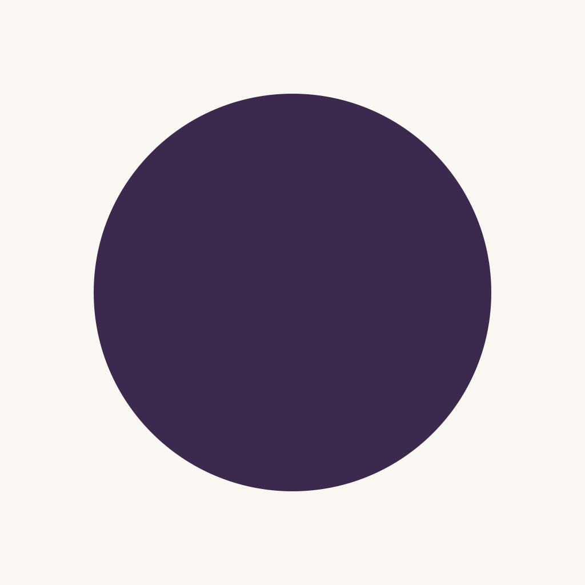

Logo concepts — render before we commit
Three hand-authored vector directions on the 1024×1024 app-icon artboard, plus the wordmark lockup and a monochrome cut. Each app-icon mark is shown at 1024, 180 (home-screen) and 60 (dock) under the iOS rounded-square mask, with a circular-avatar crop and a greyscale shrink test. Per the brief, the make-or-break is whether the mark holds a clear silhouette and a luminance gap at 60px and in greyscale.
Colours are the canonical Sloe tokens (plum #3B2A4D, damson #6A4B7A, frost #C9C2D6, sage #5E7C5A, clay #C8794E, amber #C9892C). The serif is genuine Newsreader (outlines extracted from the shipped font). No rounded-corner mask is baked into the SVGs — iOS applies it; the mask shown here is page chrome only.
Bloom Berry
RecommendedA single deep-plum berry with one off-centre frosted-bloom highlight (upper-left) — the bloom is the legibility engine and the asset no competitor owns. No leaf or stem in the icon cut. Two background fields: the cooler brand gradient (Damson→Sloe→Sloe Deep, the default) and the warmer AccentWin field (plum→clay→amber, the B-option).
A · Brand gradient field (default — cooler, calmer)
B · AccentWin field (plum → clay → amber — warmer)
Serif “S” monogram
Alternate to testA capital “S” cut from genuine Newsreader (Medium / 500) — the editorial thick/thin contrast and spur terminals are the mark. Plum on cream, and an inverse cream on the plum gradient. Ties the brand-mark to the wordmark's own DNA; a serif monogram is a different register from the lane's geometric letters, but a letter-in-a-square is a more common icon shape than the berry.
A · Plum on cream
B · Cream on plum (inverse)
Berry on the branch
Botanical · social / lockupThe fuller botanical stamp — plum berry + one sage leaf + a calm stem, on the warm Oat marketing ground. Richer and more characterful for social avatars and the wordmark lockup; the leaf adds detail that muddies at dock scale, so this is the marketing mark, not the app icon (shown small here only to demonstrate that exact trade-off).
Ground is Oat #FBF8F3 (marketing/avatar), not a plum app-icon field — per the brief's ground-by-surface split.
Monochrome cut
Single inkThe Bloom Berry reduced to a pure solid plum disc — no gradient, no bloom. The clean
filled circle reads as a considered berry / dot and never as a ring, so it survives one-colour print,
embossing, 16px favicons and the --brand-mark-ring token (invert the fill to white on dark).

Wordmark lockup
HorizontalThe Bloom Berry glyph + lowercase sloe in Newsreader (Medium / 500), generous tracking, the berry centred on the x-height midline. Lowercase in product and most marketing; clear-space equals the berry's diameter on all sides.